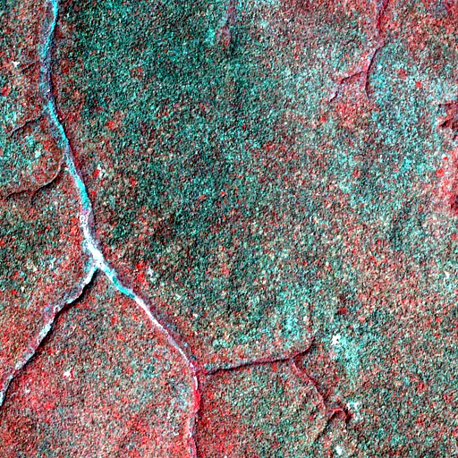

Benchmark / Near-lossless / s2-l1c-20m-6 / s2-l1c-20m-6-21
s2-l1c-20m-6-21
congo · 2023-02-05 · sample details

Metadata
| id | s2-l1c-20m-6-21 |
|---|---|
| source | COPERNICUS/S2 (Sentinel-2 MSI Level-1C) |
| asset | COPERNICUS/S2/20230205T084141_20230205T085125_T34NGF |
| crs | EPSG:32634 |
| transform | 717900.0 20.0 0.0 60660.0 0.0 -20.0 |
| datetime_start | 2023-02-05T09:00:14.265Z |
| datetime_end | 2023-02-05T09:00:14.265Z |
| bands | B5|B6|B7|B8A|B11|B12 |
| shape | 6x512x512 |
| dtype | uint16 |
| unit | DN |
| scale | 1 |
| offset | 0 |
| nodata | 0 |
| input_sha256 | 95f2ec93823a272fc9c5946258a57d7ee45abe07e80f04c70e4ed625dc1fe01f |
| site | congo |
| regime | tree |
| lon | 23.004 |
| lat | 0.502 |
| spacecraft | Sentinel-2A |
| mgrs_tile | 34NGF |
| processing_baseline | 05.09 |
| radio_add_offset | -1000|-1000|-1000|-1000|-1000|-1000 |